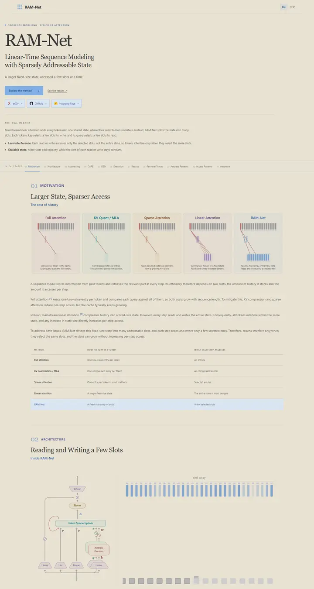

RAM-Net: Linear-Time Sequence Modeling with Sparsely Addressable State
オートミール色の紙に刷った学者の読書用の一冊。Georgia の見出し書体、淡い空色の鉛筆の書き込み、上部に留めた控えめな章索引。

表示されたページと照合済みです。
選んだ理由
温かな紙のベージュを基調に、セリフ体の見出しタイトル、横並びのページ内セクションナビ、番号付きのセクションを組み合わせています。5パネルの比較図とすっきりした表が、他の候補にはない学術的な趣を添えています。ただし本文の文字は小さく、コントラストも低めです。
以下の説明と DESIGN.md 本文は英語です。コーディングエージェントが同じ一つの版を読めるよう、翻訳していません。
概要
カラーパレット
タイポグラフィ
Georgia
RAM-Net: Linear-Time Sequence Modeling with Sparsely Addressable State
Abstract · Method · Results · BibTeX — 0123456789
Segoe UI
RAM-Net: Linear-Time Sequence Modeling with Sparsely Addressable State
Abstract · Method · Results · BibTeX — 0123456789
余白と形
ページの構成要素
ガイドライン
似たスタイル

CRAFT: Training-Free Cascaded Retrieval for Tabular QA
淡い青焼きブルーの整った製品マニュアル。どの段階もそれぞれの色の縁をまとっている。

Efficient Self-Evaluation for Diffusion Language Models via Sequence Regeneration
青、すみれ、アプリコットの夜明け色に染まった角丸カードの整った積み重ね。署名はグラデーションのワードマーク。

FIGMA: Towards FIne-Grained Music retrievAl
温かみのある紙に刷った音楽誌。赤いキッカーの下に重厚な Newsreader の見出し、結果を示す大きな赤いセリフ数字、柔らかなクリーム色の枠に収まった図。

GuideDog: A Real-World Egocentric Multimodal Dataset for Blind and Low-Vision Accessibility-Aware Guidance
静かな学術書の一頁。セリフ体の一段組み、リンクには牛血色のインク、自分の行だけをほんのり染める表。

LaMI: Augmenting Large Language Models via Late Multi-Image Fusion
丁寧に作られた学会配布資料。Noto Serif の見出し、ネイビーの枠線ボタン、交互に現れる柔らかなグレーの帯。

PairCoder++: Pair Programming as a Universal Paradigm for Verified Code-Driven Multimodal and Structured-Artifact Generation
すっきりとした白い製品ページ。青いお知らせの帯、墨のように黒いピル型ボタン、柔らかな影のカードに載ったすべての図。